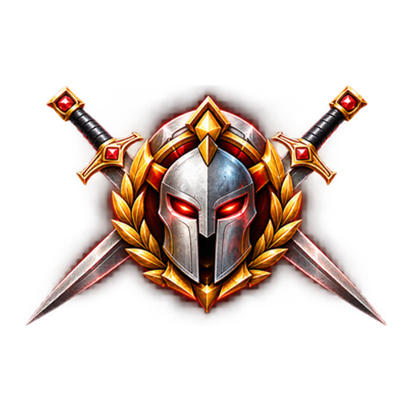

PHALANX Crimson
Isolierter Android-App-Icon-Test mit dem freigegebenen roten Helm. Keine Änderung an der produktiven PHALANX-App.
In Chrome das Menü ⋮ öffnen und App installieren oder Zum Startbildschirm hinzufügen auswählen, sofern Chrome diese Option anbietet.
TEST ONLY · Nicht Produktion · Eigenständiges Manifest Zur PHALANX-Testnavigation →